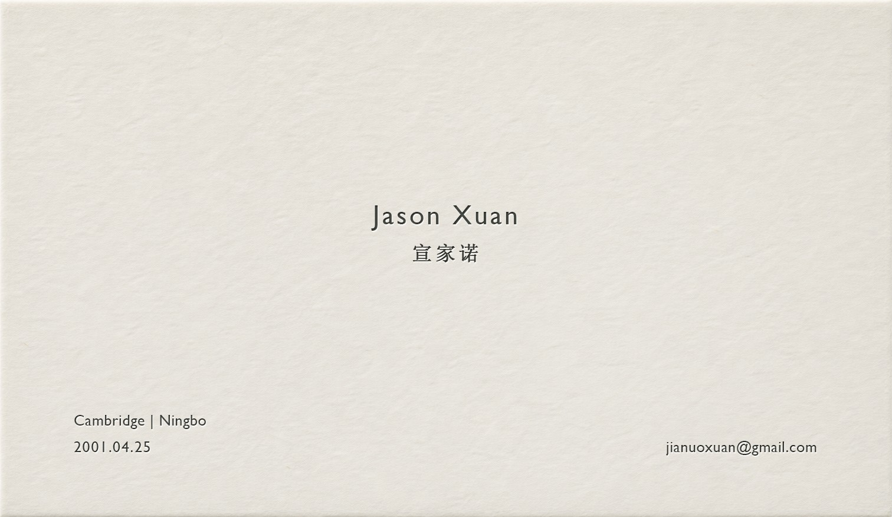

<title>Postcard Stack 3.0</title>
<meta name="claude:viewport-fit-sides" content="cover">
<link rel="preconnect" href="https://fonts.googleapis.com">
<link rel="stylesheet" href="https://fonts.googleapis.com/css2?family=Geist:wght@400;500&display=swap">
<style>
/* Layout: one white room lit from the top-left. A paper business card grows into the first postcard; projects are paper artifacts in a
   centred one-point-perspective stack. Outlines and cards sit in two stages that lean together with the cursor.
   Type: one family, three sizes only (--t1 big title, --t2 title, --t3 text). */
:root{
  --ground:#ffffff; --paper:#f9f8f6 url(img2/paper-light.jpg) center/cover; --ink:#111110; --muted:#77746d; --line:#111110; --edge:#d9d5cc;
  --sans:"Geist","Helvetica Neue",Arial,system-ui,sans-serif;
  --t1:28px; --t2:17px; --t3:13px;
  --out:cubic-bezier(.16,1,.3,1); --swift:cubic-bezier(.76,0,.24,1);
  --mw:54cqw; --mh:58cqh; --th:70cqh; --sh:84cqh;
  color-scheme:light;
}
html,body{height:100%;margin:0}
body{background:var(--ground);color:var(--ink);font-family:var(--sans);font-size:var(--t3);overflow:hidden}
*{box-sizing:border-box}
button{font:inherit;color:inherit}
.app{position:relative;height:100%;overflow:hidden;container-type:size;touch-action:none;user-select:none;-webkit-user-select:none;
  background:var(--ground);color:var(--ink);transition:background-color .9s ease,color .9s ease}

/* ---------- stages ---------- */
.stage{position:absolute;inset:0;perspective:1600px;perspective-origin:50% 50%;container-type:size}
.app:not(.live) .stage{visibility:hidden}
.grp{position:absolute;inset:0;transform-style:preserve-3d;will-change:transform;pointer-events:none}
.sz{position:absolute;left:50%;top:50%;width:min(var(--mw),calc(var(--mh) * var(--r)));aspect-ratio:var(--r)}
.sz.tall{width:min(var(--mw),calc(var(--th) * var(--r)))}
.sz.sheet{width:min(64cqw,calc(var(--sh) * var(--r)))}
.W{border:1px solid var(--line);opacity:0;transform:translate3d(var(--dx,-50%),var(--dy,-50%),var(--z,0px));
  transition:transform 1.1s var(--out),opacity .6s ease;will-change:transform,opacity;pointer-events:none}
.bg{transition:opacity .3s}
.C{transform:translate3d(var(--dx,-50%),var(--dy,-50%),var(--z,0px));transform-style:preserve-3d;opacity:0;
  transition:transform 1.1s var(--out),opacity .4s ease;pointer-events:none;will-change:transform,opacity;
  --sx:6px;--sy:14px}
.C.solid{opacity:1;pointer-events:auto;cursor:pointer}
/* arriving: travels forward and fills in on the way, so the front is never empty */
.C.arrive{transition:transform 1.1s var(--out),opacity .55s ease .2s}
/* leaving with the camera: the card drifts toward you and dissolves as you pass it */
.C.pass{transition:transform .95s cubic-bezier(.33,0,.2,1),opacity .5s ease}
.C.instant,.W.instant{transition:none!important}
.flipper{position:absolute;inset:0;transform-style:preserve-3d}
/* text mode: every layer shows its text side. One step, no dip: the text side sits fully under the picture side,
   and only the picture side fades (out to text, back in to image). The back is hidden only after the picture has covered it again. */
.front{opacity:1;visibility:inherit;transition:opacity .45s ease,visibility 0s}
.app.txt .front{opacity:0;visibility:hidden;transition:opacity .45s ease,visibility 0s .45s}
.back{opacity:0;visibility:hidden;transition:opacity 0s .45s,visibility 0s .45s}
.app.txt .back{opacity:1;visibility:inherit;transition:none}
.C.away{opacity:0!important;transition:none}
/* paper: a hairline, a sliver of edge on the side turned toward you, and a soft shadow thrown down-right by a light at top-left */
.face{position:absolute;inset:0;backface-visibility:hidden;-webkit-backface-visibility:hidden;background:var(--paper);color:#111110;
  box-shadow:0 0 0 .5px rgba(0,0,0,.14)}
/* the card is a real box of paper, --T thick: four side faces folded back from the face, drawn by the same perspective as everything else.
   Each side keeps one flat shade for a light at the top-left (top lightest, bottom darkest). Which sides you see depends only on the view. */
.flipper{--T:10px}
.sd{position:absolute;pointer-events:none}
.sd.t{left:0;right:0;top:0;height:var(--T);transform-origin:50% 0;transform:rotateX(-90deg);background:#f1eee8}
.sd.b{left:0;right:0;bottom:0;height:var(--T);transform-origin:50% 100%;transform:rotateX(90deg);background:#cdc7bb}
.sd.l{top:0;bottom:0;left:0;width:var(--T);transform-origin:0 50%;transform:rotateY(90deg);background:#e7e3db}
.sd.r{top:0;bottom:0;right:0;width:var(--T);transform-origin:100% 50%;transform:rotateY(-90deg);background:#d8d2c7}
.shd{position:absolute;inset:3%;transform:translateZ(calc(var(--T) * -1));backface-visibility:hidden;-webkit-backface-visibility:hidden;
  box-shadow:var(--sx) var(--sy) 34px -10px rgba(0,0,0,.24)}
.C.post .front{clip-path:var(--clip)}
.C.post .back{clip-path:var(--clip)}
/* no light or tint is painted over the paper on the page: the paper picture itself is already lightened */

/* postcard front: the picture itself */
.win{position:absolute;inset:0;overflow:hidden;background:#2b2a27}
.win i{position:absolute;inset:0;background-size:cover;background-position:center}
.plus{all:unset;position:absolute;left:50%;top:50%;width:48px;height:48px;margin:-24px 0 0 -24px;cursor:pointer;z-index:2;
  transition:rotate .7s var(--out),scale .5s var(--out),opacity .3s ease}
.plus::before,.plus::after{content:"";position:absolute;left:50%;top:50%;width:22px;height:1.5px;margin:-.75px 0 0 -11px;background:#fff;transition:background-color .3s}
.plus::after{rotate:90deg}
.plus.dark::before,.plus.dark::after{background:#111110}
.plus:hover{rotate:90deg}
.plus:active{scale:.85}
.plus:focus-visible{outline:none}
.plus:focus-visible::before,.plus:focus-visible::after{width:28px;margin-left:-14px}
.app.txt .C .front .plus,.app:not(.txt) .C .back .plus{pointer-events:none}
.back .plus{left:auto;top:auto;right:clamp(10px,4%,22px);bottom:clamp(10px,4%,22px);margin:0}

/* postcard back: title + text */
.pc{display:flex;flex-direction:column;gap:14px;padding:clamp(20px,7%,44px)}
.pc h2{margin:0;font-weight:500;font-size:var(--t2);line-height:1.25;letter-spacing:-.01em}
.pc p{margin:0;font-size:var(--t3);line-height:1.6;max-width:36em}

/* the sheet: index on the front, resume on the back (layout from the current site's resume page) */
.sheet .face{background:#fff;padding:clamp(22px,8%,44px);overflow:auto;scrollbar-width:none;display:flex;flex-direction:column;gap:26px}
.sheet .face::-webkit-scrollbar{display:none}
.sheet h1{margin:0;font-size:var(--t1);font-weight:500;line-height:1.08;letter-spacing:-.04em}
.sheet h2{margin:0 0 6px;font-size:var(--t2);font-weight:500;letter-spacing:-.02em}
.sheet h3{margin:0 0 4px;font-size:var(--t3);font-weight:500}
.sheet p{margin:0;font-size:var(--t3);line-height:1.55}
.sheet .mu{color:#77746d}
.head{display:flex;flex-direction:column;gap:8px}
.tl{display:flex;flex-direction:column}
.row{all:unset;display:grid;grid-template-columns:1fr 3fr;gap:18px;padding:12px 0;border-top:1px solid #dedede;font-size:var(--t3);line-height:1.55}
.row>span{color:#77746d;font-variant-numeric:tabular-nums}
.row>div{min-width:0}
button.row{cursor:pointer;transition:background-color .3s}
button.row:hover h3{text-decoration:underline;text-underline-offset:3px}
button.row:focus-visible{outline:1.5px solid #111110;outline-offset:2px}

/* index: hovering a project row floats its picture beside the cursor */
.peek{position:absolute;left:0;top:0;width:220px;z-index:55;pointer-events:none;opacity:0;transform:translate3d(var(--px,0),var(--py,0),0) scale(.96);
  transition:opacity .25s ease,scale .3s var(--out);background-size:cover;background-position:center;
  box-shadow:0 0 0 .5px rgba(0,0,0,.14),6px 14px 30px -12px rgba(0,0,0,.26)}
.peek.on{opacity:1;scale:1.04}
/* detail: the card grows where it is; the other pages (text page, then pictures) come in from the right. A row of short ticks, one per page, sits at the top */
.track{position:absolute;inset:0;pointer-events:none;z-index:30}
.rail{position:absolute;inset:0;will-change:transform}
.ti{position:absolute;margin:0;opacity:0;transform:translateX(80px);transition:opacity .6s ease,transform 1.1s var(--out)}
.track.in .ti{opacity:1;transform:none}
.ti>.im{position:absolute;inset:0;background-size:cover;background-position:center}
.ti>.sh{position:absolute;inset:2%;box-shadow:6px 14px 34px -10px rgba(0,0,0,.24)}
.ti:not(.shp)>.im{box-shadow:0 0 0 .5px rgba(0,0,0,.14),6px 14px 34px -14px rgba(0,0,0,.24)}
.ti.shp>.im,.ti.shp>.face{clip-path:var(--clip)}
.ti>.face{backface-visibility:visible}
.ti.cv{opacity:1;transform:none;transform-origin:0 0;transition:transform .95s cubic-bezier(.7,0,.2,1)}
.track:not(.in) .ti{transition-delay:0s!important;transition-duration:.35s}
.track:not(.in) .ti.cv{transition-duration:.95s}
/* the text page is the card's back at the card's own size, scaled up as a whole: same line breaks, type grows with it */
.ti>.face.pc{right:auto;bottom:auto;transform-origin:0 0}
.app.open .bg{opacity:.22;filter:blur(6px);transition:opacity .6s ease,filter .6s ease}
.ticks{position:absolute;left:50%;top:22px;transform:translateX(-50%);z-index:45;display:flex;align-items:flex-start;gap:0;opacity:0;pointer-events:none;transition:opacity .5s ease}
.app.open .ticks{opacity:1;pointer-events:auto;transition-delay:.35s}
.ticks button{all:unset;cursor:pointer;width:11px;height:26px;display:flex;justify-content:center}
.ticks button::before{content:"";width:1.5px;height:8px;background:var(--ink);opacity:.35;transition:height .4s var(--out),opacity .3s}
.ticks button:hover::before{opacity:.7}
.ticks button.on::before{height:18px;opacity:1}
.ticks.hint button.nx::before{animation:nudge 1.6s ease-in-out infinite}
@keyframes nudge{0%,100%{height:8px;opacity:.35}50%{height:13px;opacity:.75}}
.ticks button:focus-visible{outline:1.5px solid var(--ink);outline-offset:2px}
.mode{all:unset;position:absolute;right:max(22px,env(safe-area-inset-right,0px));top:20px;z-index:44;display:flex;gap:14px;font-size:var(--t3);cursor:pointer;
  opacity:0;transition:opacity .6s .35s}
.mode span{opacity:.3;transition:opacity .3s}
.mode span.on{opacity:1}
.mode:hover span:not(.on){opacity:.6}
.mode:focus-visible{outline:1.5px solid var(--ink);outline-offset:4px}
.app.live .mode{opacity:1}
.app.open .mode{opacity:0;pointer-events:none;transition:opacity .2s}
.app.live.open .dock{opacity:0;pointer-events:none;transition:opacity .25s}

/* draft-only switches for comparing depth ideas */
.dev{all:unset;position:absolute;right:max(22px,env(safe-area-inset-right,0px));bottom:18px;z-index:44;display:flex;gap:14px;font-size:var(--t3);opacity:0;transition:opacity .6s .35s}
.app.live .dev{opacity:1}
.app.open .dev{opacity:0;pointer-events:none;transition:opacity .2s}
.dev button{all:unset;cursor:pointer;opacity:.3;transition:opacity .3s}
.dev button.on{opacity:1}
.dev .vp{display:flex;gap:10px;padding-right:14px;border-right:1px solid color-mix(in srgb,var(--ink) 25%,transparent)}
.dev button:hover:not(.on){opacity:.6}
.dev button:focus-visible{outline:1.5px solid var(--ink);outline-offset:4px}

/* chrome */
.dock{position:absolute;left:0;top:50%;transform:translateY(-50%);display:flex;flex-direction:column;gap:10px;
  padding-left:max(22px,env(safe-area-inset-left,0px));padding-right:12px;z-index:40;opacity:0;transition:opacity .6s .35s}
.app.live .dock{opacity:1}
.app.open .dock{transition:opacity .2s}
.dock button{all:unset;cursor:pointer;width:14px;height:14px;border:1.5px solid var(--ink);display:block;transition:background-color .3s,border-color .9s}
.dock button.ix{height:19px;margin-top:12px}
.dock button.on{background:var(--ink)}
.dock button:focus-visible{outline:1.5px solid var(--ink);outline-offset:3px}
.close{all:unset;position:absolute;right:max(18px,env(safe-area-inset-right,0px));top:18px;width:40px;height:40px;cursor:pointer;z-index:50;
  opacity:0;pointer-events:none;transition:opacity .4s,rotate .7s var(--out)}
.close::before,.close::after{content:"";position:absolute;left:50%;top:50%;width:20px;height:1.5px;margin:-.75px 0 0 -10px;background:var(--ink);rotate:45deg}
.close::after{rotate:-45deg}
.close:hover{rotate:90deg}
.close:focus-visible{outline:none}
.app.open .close{opacity:1;pointer-events:auto}

/* ---------- opening: a paper business card ---------- */
.intro{position:absolute;inset:0;z-index:60;perspective:900px}
.bc{all:unset;display:block;position:absolute;left:50%;top:50%;width:min(440px,80cqw);aspect-ratio:1512/876;cursor:pointer;
  transform:translate(-50%,-50%) rotateX(var(--tx,0deg)) rotateY(var(--ty,0deg));transition:transform .6s var(--out);will-change:transform;
  box-shadow:var(--bsx,4px) var(--bsy,12px) 28px -14px rgba(0,0,0,.15);opacity:0;animation:rise 1.1s var(--out) .1s forwards}
.bc:focus-visible{outline:none}
.bc img,.bc .blank{position:absolute;inset:0;width:100%;height:100%;display:block}
.bc .blank{background:url(img2/paper-light.jpg) center/cover;opacity:0;transition:opacity .3s ease}
.bc.go .blank{opacity:1}
@keyframes rise{from{opacity:0;transform:translate(-50%,calc(-50% + 6px))}to{opacity:1;transform:translate(-50%,-50%)}}

@media (max-aspect-ratio:1/1){
  :root{--mw:78cqw;--mh:52cqh;--th:60cqh;--sh:70cqh;--t1:24px}
  .sz.sheet{width:min(86cqw,calc(var(--sh) * var(--r)))}
  .dock{top:auto;bottom:max(18px,env(safe-area-inset-bottom,0px));left:50%;transform:translateX(-50%);flex-direction:row;padding:0}
  .dock button.ix{margin:0 0 0 12px}
  .dev{right:auto;bottom:auto;left:max(22px,env(safe-area-inset-left,0px));top:20px}
}
@media (prefers-reduced-motion:reduce){
  *,*::before,*::after{animation-duration:.01s!important;animation-iteration-count:1!important;transition-duration:.01s!important}
}
</style>

<svg width="0" height="0" style="position:absolute" aria-hidden="true"><filter id="rough" x="-2%" y="-2%" width="104%" height="104%"><feTurbulence type="fractalNoise" baseFrequency="0.8" numOctaves="2" seed="7"/><feDisplacementMap in="SourceGraphic" scale="1.8" xChannelSelector="R" yChannelSelector="G"/></filter></svg>
<main class="app" id="app" aria-label="Jianuo Xuan portfolio">
  <div class="stage bg" id="bg"><div class="grp"></div></div>
  <div class="stage fg" id="fg"><div class="grp"></div></div>
  <div class="track" id="track"><div class="rail" id="rail"></div></div>
  <nav class="dock" id="dock" aria-label="Projects"></nav>
  <button class="close" id="close" aria-label="Close (Esc)"></button>
  <nav class="ticks" id="ticks" aria-label="Pages"></nav>
  <button class="mode" id="mode" aria-label="Switch between pictures and text"><span class="on">Image</span><span>Text</span></button>
  <nav class="dev" id="dev" aria-label="Depth (draft)"><span class="vp"><button data-v="0">灭点居中</button><button data-v="-14">略上</button><button data-v="-27" class="on">中上</button><button data-v="-40">偏上</button></span><button data-k="fog" class="on">雾</button><button data-k="travel" class="on">穿行</button></nav>
  <div class="peek" id="peek" aria-hidden="true"></div>
  <div class="intro" id="intro">
    <button class="bc" id="bc" aria-label="Jason Xuan, open portfolio">
      
      <span class="blank"></span>
    </button>
  </div>
</main>

<script>
/* projects, text and pictures from the current site (placeholders). [title, sound, year, cover, line, text] */
const P=[
 ["Roulettective","rain","2025","roulettective-5","A mystery you can hold.","Roulettective brings generative storytelling into a tangible detective game. Players handle physical slides, collect clues, and form connections while an AI system develops the investigation. The familiar ritual of loading a projector becomes a new way to interact with a language model."],
 ["Drop the Beat","birds","2025","drop-hero","Two players. One dimension.","Drop the Beat turns a musical duel into a physical game. Two players control record-player-inspired interfaces, sending rests and high notes along a one-dimensional musical scale. Sound, gesture, and the object work together to make the competition legible."],
 ["Marching Through Memories","wind","2025","dressage-cover","Reimagining history through AI.","Marching Through Memories explores how historical material can become an immersive visual narrative. The project connects research, AI-generated imagery, three-dimensional reconstruction, and spatial video into a continuous production process."],
 ["Green Night","night","2025","green-night-cover","A world between memory and dream.","Green Night grows out of childhood memories, dreams, and the landscape of a riverside hometown. A boat carrying plants, an expanse of green, and a sky filled with light become fragments of a world that is familiar but impossible to return to exactly."],
 ["Decentralized Generality","drizzle","2022","apparel-exchange-cover","Bringing production into public life.","The Apparel Exchange proposes an alternative to the separation of industrial production and neighborhood life. Existing factory buildings are reused and connected by a flexible central pavilion, inviting clothing production, exchange, repair, and public activities to coexist."],
 ["A Warm Spot","waves","2021","warm-spot","A little warmth on the water.","Along the river in Dongqiao, temperature shapes everyday life. A Warm Spot imagines a floating installation that combines a pool, heated surfaces, and a glowing balloon. It turns a cold waterfront into a place for swimming, gathering, and lingering."],
 ["Gentle Monument","breeze","2024","gentle-monument-cover","A place to wait. A place to belong.","Gentle Monument combines a community library and a railway station. A linear reading room bridges the two, making waiting, reading, and moving through the city part of one continuous public experience."],
 ["Autonomy & Materiality","desert","2023","serjilla","Building a future from what remains.","The proposal approaches Serjilla as both cultural heritage and a landscape of material resources. Presented as a construction manual, it explores how shelter, productive activity, and conservation might develop through a shared system of reuse."],
 ["At the Heart of Light","stream","2022","heart-of-light","Everyday life, shaped by light.","The Light Well Residence explores the relationship between domestic routines, family relationships, and a central source of daylight. The light well gives the house a shared orientation while creating moments of separation and connection."]];
const GAL=[["roulettective-0","roulettective-1","roulettective-7","roulettective-10","mechanism"],["drop-detail","drop-assembly","drop-iteration","drop-prototype"],["dressage"],["green-night-1","green-night-boat","green-night-plan","green-night-canopy","green-night-2","green-night-0"],["apparel-exchange-5","apparel-exchange-6","apparel-exchange-10","apparel-exchange-11"],["warm-spot-29","warm-spot-30"],["gentle-monument-24","gentle-monument-25","gentle-monument-26","gentle-monument-27"],["serjilla-14","serjilla-15","serjilla-16","serjilla-17"],["heart-of-light-19","heart-of-light-20","heart-of-light-21","heart-of-light-22"]];
const RATIO={"apparel-exchange-10":1.4147,"apparel-exchange-11":1.4147,"apparel-exchange-5":1.4147,"apparel-exchange-6":1.4147,"apparel-exchange-cover":1.3294,"dressage-cover":1.6277,"dressage":1.6,"drop-assembly":1.5009,"drop-detail":.6663,"drop-hero":1.5009,"drop-iteration":1.5009,"drop-prototype":1.5009,"gentle-monument-24":1.4147,"gentle-monument-25":1.4147,"gentle-monument-26":1.4147,"gentle-monument-27":1.4147,"gentle-monument-cover":.8449,"green-night-0":1.7747,"green-night-1":1.4311,"green-night-2":1.7806,"green-night-boat":1.4311,"green-night-canopy":1.7415,"green-night-cover":1.7747,"green-night-plan":1.2365,"heart-of-light-19":1.4147,"heart-of-light-20":1.4147,"heart-of-light-21":1.4147,"heart-of-light-22":1.4147,"heart-of-light":.7069,"mechanism":2.7491,"roulettective-0":1.5009,"roulettective-1":1.5009,"roulettective-10":1.5009,"roulettective-5":1.5009,"roulettective-7":1.5009,"serjilla-14":1.4147,"serjilla-15":1.4147,"serjilla-16":1.4147,"serjilla-17":1.4147,"serjilla":.7069,"warm-spot-29":1.4147,"warm-spot-30":1.4147,"warm-spot":.7069};
const src=n=>`url(img2/${n}.jpg)`;
const reduce=matchMedia('(prefers-reduced-motion: reduce)').matches;
/* depth: three ideas that can be switched on and off in this draft.
   vanishing point: the stack stays square-on; the point all layers recede to sits above centre (VY, % of the screen height),
   so the back layers climb above the front card. It must sit above the card's top edge for them to show at rest.
   fog: deeper spacing, and outlines fade faster with distance.
   travel: moving on, the camera passes through the front card instead of the card sinking back. */
const D={fog:true,travel:true};let VY=-27;
let GAP=240;                         /* px between layers */
const PASS=380;                      /* how far toward you a card drifts as the camera passes it, px */
function depthVars(){GAP=D.fog?240:120}
function fade(q){return q===0?0:D.fog?Math.max(.08,.72*Math.pow(.8,q-1)):Math.max(.12,.8-(q-1)*.08)}
function place(el,q,z){el.style.setProperty('--z',(z??-q*GAP)+'px')}
function snap(el,fn){el.classList.add('instant');fn();void el.offsetWidth;el.classList.remove('instant')}

const $=id=>document.getElementById(id);
const ticks=$('ticks'),modeB=$('mode'),app=$('app'),bg=$('bg'),fg=$('fg'),dock=$('dock'),track=$('track'),rail=$('rail'),closeB=$('close'),intro=$('intro'),bc=$('bc');
const N=P.length+1, IX=P.length;
let txt=false,cur=0,open=false,started=false,s=0,sT=0,maxS=0,raf=0,settle=null;

const row=(y,h,p,go)=>`<${go!=null?`button class="row" data-go="${go}"`:'div class="row"'}><span>${y}</span><div><h3>${h}</h3><p class="mu">${p}</p></div></${go!=null?'button':'div'}>`;
function sheetFront(){return `<div class="head"><h1>Jianuo Xuan</h1><p class="mu">Multidisciplinary Designer · AI, Objects &amp; Spaces</p><p class="mu">Cambridge, MA</p></div>
  <section class="tl"><h2>Work</h2>${P.map((p,j)=>row(p[2],p[0],p[4],j)).join('')}</section>`}
function sheetBack(){return `<section class="tl"><h2>Experience</h2>
    ${row('2026','WeChat','AI Product Manager Intern<br>Product management for multimodal AI, focusing on evaluations and benchmarks for vision-language models.')}
    ${row('2025–2026','Bjarke Ingels Group','Design assistant<br>Explored AI-assisted image enhancement and visualization workflows for architectural communication.')}
    ${row('2025','MIT · Interaction Intelligence','AI hardware &amp; interaction projects<br>Developed Roulettective and Drop the Beat with Yuhan Wang, under Marcelo Coelho.')}</section>
  <section class="tl"><h2>Education</h2>
    ${row('2024–2027','Harvard Graduate School of Design','Master in Architecture II · Expected May 2027<br>Computational design, digital media, and cross-disciplinary exploration.')}
    ${row('2019–2024','Wuhan University of Technology','Bachelor of Architecture · Five-year degree<br>GPA 93.89/100 · Ranked 1/57.')}</section>
  <section class="tl"><h2>Publications</h2>
    ${row('2025','Roulettective · UIST Adjunct','Yuhan Wang and Jianuo Xuan.<br>AI Re-invention of a Vintage Slide Projector as a Tangible Detective Game.')}
    ${row('2025','Roulettective · NeurIPS Creative AI Track','Yuhan Wang and Jianuo Xuan.<br>Repurposing a Vintage Slide Projector into an AI-Driven Physical Detective Game.')}</section>
  <section class="tl"><h2>Tools &amp; methods</h2>
    ${row('Design','Across digital and physical media','Figma, Adobe Creative Suite, Rhino, Grasshopper, Blender, Unreal Engine, Unity.')}
    ${row('Prototyping','Code &amp; generative workflows','Python, HTML/CSS, Flask, SQL, p5.js, C/C#; AI-assisted prototyping, image/video generation, and multimodal evaluation.')}
    ${row('Languages','English &amp; Mandarin','English: fluent. Mandarin: native.')}
    ${row('Contact','jianuoxuan@gmail.com','Cambridge, MA')}</section>`}

/* each layer = an outline in the back stage + a card in the front stage */
const W=[],C=[];
/* each postcard gets a slightly irregular outline (tiny nicks along the edges).
   Values are percentages, so the same shape scales with the card into the detail view. */
function rng(seed){return()=>{seed=(seed*16807)%2147483647;return(seed-1)/2147483646}}
function shapeCard(el,j){
  const rnd=rng(j*7919+13),J=()=>(rnd()-.5)*.5,pts=[];rnd();
  const C4=[[0,0],[100,0],[100,100],[0,100]];
  const IN=[[0,1],[-1,0],[0,-1],[1,0]];  /* inward direction of the top, right, bottom and left edges */
  const edge=(a,b,e)=>{for(let k=1;k<6;k++){const t=k/6+(rnd()-.5)*.06,d=Math.abs(J())*.7;pts.push([a[0]+(b[0]-a[0])*t+IN[e][0]*d,a[1]+(b[1]-a[1])*t+IN[e][1]*d])}};
  C4.forEach((c,i)=>{pts.push([c[0]+(c[0]?-1:1)*Math.abs(J())*.6,c[1]+(c[1]?-1:1)*Math.abs(J())*.6]);edge(c,C4[(i+1)%4],i)});
  el.style.setProperty('--clip',`polygon(${pts.map(p=>`${p[0].toFixed(2)}% ${p[1].toFixed(2)}%`).join(',')})`);
}
for(let j=0;j<N;j++){
  const isSheet=j===IX,r=isSheet?1/1.414:RATIO[P[j][3]],kind=isSheet?'sheet':'post',tall=r<1&&!isSheet?' tall':'';
  const w=document.createElement('div');w.className=`sz W ${kind}${tall}`;w.style.setProperty('--r',r);bg.firstElementChild.appendChild(w);W.push(w);
  const c=document.createElement('div');c.className=`sz C ${kind}${tall}`;c.style.setProperty('--r',r);
  if(!isSheet)shapeCard(c,j);
  const front=isSheet?`<div class="face front">${sheetFront()}<i class="lt"></i></div>`:
    `<div class="face front"><div class="win"><i style="background-image:${src(P[j][3])}"></i></div><button class="plus" aria-label="Open ${P[j][0]}"></button><i class="lt"></i></div>`;
  const back=isSheet?`<div class="face back">${sheetBack()}<i class="lt"></i></div>`:`<div class="face back pc"><h2>${P[j][0]}</h2><p>${P[j][5]}</p><button class="plus dark" aria-label="Open ${P[j][0]}"></button><i class="lt"></i></div>`;
  c.innerHTML=`<div class="flipper" aria-label="${isSheet?'Index and resume':P[j][0]}"><i class="shd"></i><i class="sd t"></i><i class="sd b"></i><i class="sd l"></i><i class="sd r"></i>${back}${front}</div>`;
  fg.firstElementChild.appendChild(c);C.push(c);
  c.addEventListener('click',e=>{
    if(app._drag||!c.classList.contains('solid'))return;
    const t=e.target.closest('[data-go]');
    if(t){go(+t.dataset.go);return}
    if(!open&&(e.target.closest('.plus')||cur!==IX))openL();
  });
  const b=document.createElement('button');b.setAttribute('aria-label',isSheet?'Index and resume':P[j][0]);if(isSheet)b.className='ix';
  b.addEventListener('click',()=>{if(!started)return;if(open)closeL(()=>go(j));else go(j)});dock.appendChild(b);
}

/* cyclic queue. q=0: the solid card in front. Others: outlines behind, stepping back toward the vanishing point, fainter with depth.
   Arriving card: travels forward from its own depth and fills in on the way, so the front is never empty.
   Leaving card, with travel: drifts toward you and dissolves (you pass through it); its outline appears at the far end.
   Going back, the arriving card comes from in front of you instead, and the leaving card sinks back one step. */
function go(i,instant,dir){
  const prev=cur;cur=((i%N)+N)%N;if(typeof peek!=='undefined'){peek.classList.remove('on');peekK=-1}setHover(false);
  const k=(cur-prev+N)%N,fwd=dir!=null?dir>0:k<=N/2,T=D.travel&&!reduce;
  for(let j=0;j<N;j++){
    const q=(j-cur+N)%N,w=W[j],c=C[j],tgt=fade(q);
    clearTimeout(c._t);clearTimeout(w._t);
    if(q===0){
      w.style.opacity=0;
      if(instant){snap(c,()=>place(c,0));c.classList.add('solid');place(w,0);continue}
      if(!c.classList.contains('solid')){
        if(T&&!fwd){snap(c,()=>{place(c,0,PASS);c.style.opacity=0});snap(w,()=>place(w,0,PASS));}
        clearTimeout(c._p);c.classList.remove('pass');c.classList.add('arrive','solid');c.style.opacity='';
        place(c,0);place(w,0);
        /* the chosen layer's outline fades to nothing while it travels forward (opacity set to 0 above) */
        c._t=setTimeout(()=>{c.classList.remove('arrive');testHover()},reduce?0:1100);
      }else place(w,0);
    }else if(c.classList.contains('solid')){
      c.classList.remove('solid','arrive');c.firstElementChild.style.transform='';
      if(T&&fwd){
        c.classList.add('pass');place(c,0,PASS);
        snap(w,()=>{place(w,q);w.style.opacity=0});w._t=setTimeout(()=>w.style.opacity=tgt,350);
        clearTimeout(c._p);c._p=setTimeout(()=>{if(c.classList.contains('pass'))snap(c,()=>{c.classList.remove('pass');place(c,(j-cur+N)%N)})},950);
      }else{
        place(c,q);place(w,q);w.style.opacity=.9;w._t=setTimeout(()=>w.style.opacity=tgt,500);
      }
    }else{
      if(!c.classList.contains('pass'))place(c,q);
      place(w,q);w.style.opacity=tgt;
    }
  }
  [...dock.children].forEach((b,j)=>b.classList.toggle('on',j===cur));
  lean();
}

/* ---------- light, lean and paper thickness ---------- */
const CT=6;let FZ=[0,0,0,0,0,0],mx=innerWidth/2,my=innerHeight/2,hasMouse=false,pX=0,pY=0,tX=0,tY=0,rX=0,rY=0,cX=0,cY=0,hov=false,lr=0;
const groups=[bg.firstElementChild,fg.firstElementChild];
function lean(){if(!lr)lr=requestAnimationFrame(leanTick)}
function leanTick(){
  lr=0;
  /* whole stack: up to ~3deg toward the cursor. Front card: a little more while the cursor is on it. */
  /* over the card nothing moves: the targets freeze where they were. Off the card the stack answers the cursor, gently and slowly. */
  if(open||!hasMouse)FZ=[0,0,0,VY,0,0];
  else if(!hov){const ux=mx/innerWidth*2-1,uy=my/innerHeight*2-1;FZ=[uy*.8,-ux*1.1,ux*.25*50,VY+uy*.25*45,uy*CT,-ux*CT]}
  /* the cursor is the eye: the vanishing point follows it, the stack turns slightly, and the front card turns a little more (CT deg),
     so you see the sides of the paper box that face the cursor. Over the card nothing moves. */
  const [gx,gy,ox,oy,hx=0,hy=0]=FZ;
  rX+=(gx-rX)*.04;rY+=(gy-rY)*.04;cX+=(hx-cX)*.04;cY+=(hy-cY)*.04;pX+=(ox-pX)*.025;pY+=(oy-pY)*.025;
  const done=[gx-rX,gy-rY,hx-cX,hy-cY,ox-pX,oy-pY].every(v=>Math.abs(v)<.004);
  if(done){rX=gx;rY=gy;cX=hx;cY=hy;pX=ox;pY=oy}else lr=requestAnimationFrame(leanTick);
  const t=`rotateX(${rX.toFixed(3)}deg) rotateY(${rY.toFixed(3)}deg)`;groups.forEach(g=>g.style.transform=t);
  const po=`${(50+pX).toFixed(2)}% ${(50+pY).toFixed(2)}%`;bg.style.perspectiveOrigin=po;fg.style.perspectiveOrigin=po;
  C[cur].firstElementChild.style.transform=`rotateX(${cX.toFixed(3)}deg) rotateY(${cY.toFixed(3)}deg)`;
  /* the shadow moves against the tilt */
  const ax=rX+cX,ay=rY+cY,c=C[cur].style;
  c.setProperty('--sx',(6-ay*.6).toFixed(1)+'px');c.setProperty('--sy',(14+ax*.6).toFixed(1)+'px');
}

/* ---------- hover state ---------- */
function setHover(v){if(v===hov)return;hov=v;lean()}
function testHover(){
  if(!started||open||!hasMouse){return}
  const c=C[cur];if(!c.classList.contains('solid')){setHover(false);return}
  const r=c.getBoundingClientRect();setHover(mx>=r.left&&mx<=r.right&&my>=r.top&&my<=r.bottom);
}

/* centre brightness of each picture decides a light or dark + */
P.forEach((m,k)=>{const im=new Image();im.onload=()=>{try{
  const cv=document.createElement('canvas');cv.width=cv.height=32;const x=cv.getContext('2d',{willReadFrequently:true});
  x.drawImage(im,0,0,32,32);const d=x.getImageData(0,0,32,32).data;
  let cl=0,cn=0;
  for(let i=0;i<d.length;i+=4){const px=(i/4)%32,py=Math.floor(i/128);
    if(px>11&&px<20&&py>11&&py<20){cl+=.2126*d[i]+.7152*d[i+1]+.0722*d[i+2];cn++}}
  C[k].querySelector('.plus').classList.toggle('dark',cl/cn/255>.58);
}catch(e){}};im.src=`img2/${m[3]}.jpg`});

/* ---------- open: the card grows where it stands; the other pages come in from its right. Wheel and keys move sideways ---------- */
let L0=0,FIG=[],scrolled=false,act=-1;
function geom(){
  const a=app.getBoundingClientRect(),ra=RATIO[P[cur][3]];
  let H=Math.min(a.height*.68,a.height-150);if(H*ra>a.width*.8)H=a.width*.8/ra;
  const W=H*ra;L0=(a.width-W)/2;return {a,H,W,top:(a.height-H)/2};
}
function openL(){
  const c=C[cur];if(open||cur===IX||!c.classList.contains('solid'))return;
  open=true;s=sT=0;scrolled=false;act=-1;setHover(false);
  const {a,H,W,top}=geom(),r=c.getBoundingClientRect(),gap=Math.max(24,H*.07),cs=c.style;
  const vars=`--clip:${cs.getPropertyValue('--clip')}`;
  const pic=`<i class="sh"></i><div class="im" style="background-image:${src(P[cur][3])}"></div>`;
  const cw=c.offsetWidth,ch=c.offsetHeight,k=W/cw,pad=getComputedStyle(c.querySelector('.back')).padding;
  const txp=`<i class="sh"></i><div class="face pc" style="width:${cw}px;height:${ch}px;padding:${pad};transform:scale(${k})"><h2>${P[cur][0]}</h2><p>${P[cur][5]}</p></div>`;
  const pages=txt?[['tx',txp],['',pic]]:[['',pic],['tx',txp]];
  let x=L0,html='';FIG=[];
  pages.forEach(([k,inner],n)=>{FIG.push(x-L0);html+=`<figure class="ti shp ${k} ${n?'':'cv'}" style="${vars};left:${x}px;top:${top}px;width:${W}px;height:${H}px;transition-delay:${n?.35:0}s">${inner}</figure>`;x+=W+gap});
  GAL[cur].forEach((k,n)=>{const w=H*RATIO[k];FIG.push(x-L0);html+=`<figure class="ti" style="left:${x}px;top:${top}px;width:${w}px;height:${H}px;transition-delay:${.45+n*.07}s"><div class="im" style="background-image:${src(k)}"></div></figure>`;x+=w+gap});
  rail.innerHTML=html;rail.style.transform='';
  maxS=Math.max(0,x-gap-(L0+W));FIG=FIG.map(v=>Math.min(v,maxS));
  ticks.innerHTML=FIG.map((v,i)=>`<button aria-label="Page ${i+1}" data-i="${i}"></button>`).join('');ticks.classList.add('hint');
  const cv=rail.firstElementChild;
  cv.style.transition='none';cv.style.transform=`translate(${r.left-a.left-L0}px,${r.top-a.top-top}px) scale(${r.width/W},${r.height/H})`;
  c.classList.add('away');app.classList.add('open');void cv.offsetWidth;
  cv.style.transition='';cv.style.transform='';track.classList.add('in');apply();
}
/* the page whose left edge is nearest the first page's slot is the current one */
function apply(){
  rail.style.transform=`translate3d(${-s}px,0,0)`;
  if(!open)return;let i=0,best=1e9;FIG.forEach((v,k)=>{const d=Math.abs(v-s);if(d<best-.5){best=d;i=k}});
  if(maxS&&s>=maxS-1)i=FIG.length-1;
  if(i!==act){act=i;[...ticks.children].forEach((b,k)=>{b.classList.toggle('on',k===i);b.classList.toggle('nx',k===i+1)})}
}
ticks.addEventListener('click',e=>{const b=e.target.closest('button');if(b)scrollTo(FIG[+b.dataset.i])});
ticks.addEventListener('pointerdown',e=>e.stopPropagation());
/* frame-rate independent easing, so the slide takes the same time on a slow frame */
let lastT=0;
function tick(now){
  const dt=lastT?Math.min(64,now-lastT):16.7;lastT=now;
  s+=(sT-s)*(1-Math.pow(.86,dt/16.7));if(Math.abs(sT-s)<.4)s=sT;apply();
  if(s!==sT)raf=requestAnimationFrame(tick);else{raf=0;lastT=0;if(settle){const f=settle;settle=null;f()}}
}
function scrollTo(v){sT=Math.max(0,Math.min(maxS,v));if(sT>2&&!scrolled){scrolled=true;ticks.classList.remove('hint')}if(!raf)raf=requestAnimationFrame(tick)}
let closing=false;
function closeL(after){
  if(!open||closing){if(!open)after&&after();return}
  closing=true;const c=C[cur];
  const fold=()=>{
    const {a,H,W,top}=geom(),r=c.getBoundingClientRect(),cv=rail.firstElementChild;
    track.classList.remove('in');app.classList.remove('open');
    cv.style.transform=`translate(${r.left-a.left-L0}px,${r.top-a.top-top}px) scale(${r.width/W},${r.height/H})`;
    setTimeout(()=>{c.classList.remove('away');rail.innerHTML='';open=false;closing=false;hov=null;if(hasMouse)testHover();else setHover(false);after&&after()},reduce?0:950);
  };
  if(s>1){settle=fold;scrollTo(0)}else fold();
}
/* text mode: the whole stack turns over to its backs; switched only here, on the main view */
function setMode(v){
  if(v===txt||open)return;txt=v;app.classList.add('turning');app.classList.toggle('txt',v);
  [...modeB.children].forEach((sp,i)=>sp.classList.toggle('on',i===(v?1:0)));
  peek.classList.remove('on');peekK=-1;
  clearTimeout(setMode.t);setMode.t=setTimeout(()=>app.classList.remove('turning'),reduce?0:1000);
}
modeB.addEventListener('click',()=>setMode(!txt));
$('dev').addEventListener('click',e=>{const b=e.target.closest('button');if(!b||open)return;
  if(b.dataset.v!=null){VY=+b.dataset.v;[...b.parentNode.children].forEach(x=>x.classList.toggle('on',x===b));FZ[3]=VY;lean();return}
  const k=b.dataset.k;D[k]=!D[k];b.classList.toggle('on',D[k]);depthVars();
  for(let j=0;j<N;j++){const q=(j-cur+N)%N;place(W[j],q);place(C[j],q);if(q)W[j].style.opacity=fade(q)}});
closeB.addEventListener('click',()=>closeL());

/* ---------- opening ---------- */
intro.addEventListener('pointermove',e=>{
  if(started||e.pointerType!=='mouse')return;const r=bc.getBoundingClientRect();
  const dx=(e.clientX-(r.left+r.width/2))/innerWidth,dy=(e.clientY-(r.top+r.height/2))/innerHeight,ty=dx*5,tx=-dy*5;
  const st=bc.style;st.setProperty('--ty',ty.toFixed(2)+'deg');st.setProperty('--tx',tx.toFixed(2)+'deg');
  st.setProperty('--bex',(-ty*.16).toFixed(2)+'px');st.setProperty('--bey',(tx*.16).toFixed(2)+'px');
  st.setProperty('--bsx',(4+ty).toFixed(1)+'px');st.setProperty('--bsy',(12-tx).toFixed(1)+'px');
  st.setProperty('--bgx',(22-ty*4)+'%');st.setProperty('--bgy',(18+tx*4)+'%');
});
function start(){
  if(started)return;started=true;
  /* the card grows to exactly the first postcard's frame (same centre), then the picture fades in where the paper was */
  const b=bc.getBoundingClientRect(),t=C[0].getBoundingClientRect();
  const sx=t.width/b.width,sy=t.height/b.height;
  bc.classList.add('go');bc.style.animation='none';bc.style.opacity=1;
  const from=getComputedStyle(bc).transform;bc.style.transition='none';
  bc.animate([{transform:from},{transform:'translate(-50%,-50%) scale(1)',offset:.12},{transform:`translate(-50%,-50%) scale(${sx},${sy})`}],
    {duration:reduce?1:720,easing:'cubic-bezier(.7,0,.2,1)',fill:'forwards'}).onfinish=reveal;
}
function reveal(){
  W.forEach((w,j)=>{w.style.transition='none';place(w,j,-j*GAP-600);w.style.opacity=0});
  app.classList.add('live');C[0].classList.add('solid');
  bc.animate([{opacity:1},{opacity:0}],{duration:reduce?1:450,easing:'ease',fill:'forwards'}).onfinish=()=>{intro.remove();testHover()};
  void bg.offsetWidth;
  W.forEach((w,j)=>{w.style.transition='';w.style.transitionDelay=(.2+j*.05)+'s'});
  go(0,true);
  setTimeout(()=>W.forEach(w=>w.style.transitionDelay=''),1600);
}
bc.addEventListener('click',start);

/* ---------- input ---------- */
let lastW=0,lastE=0,wAcc=0,wLock=false;
app.addEventListener('wheel',e=>{
  e.preventDefault();if(!started)return;
  const d=Math.abs(e.deltaX)>Math.abs(e.deltaY)?e.deltaX:e.deltaY;
  if(open){
    scrollTo(sT+d);
    return}
  if(cur===IX&&hov){const f=C[IX].querySelector(txt?'.back':'.front');if((e.deltaY>0&&f.scrollTop+f.clientHeight<f.scrollHeight-1)||(e.deltaY<0&&f.scrollTop>0)){f.scrollTop+=e.deltaY;return}}
  /* one step per gesture: after a step, wait until the wheel has been quiet for 160ms (trackpad inertia) and at least 450ms have passed */
  const now=Date.now(),quiet=now-lastE>160;lastE=now;
  if(Math.abs(d)<2)return;
  if(quiet)wLock=false;
  if(now-lastW<450||wLock)return;
  wAcc=quiet?d:wAcc+d;if(Math.abs(wAcc)<24)return;
  lastW=now;wLock=true;wAcc=0;go(cur+(d>0?1:-1),false,d>0?1:-1);
},{passive:false});
let pd=null;
app.addEventListener('pointerdown',e=>{pd={x:e.clientX,y:e.clientY,s:sT,moved:false};app._drag=false});
app.addEventListener('pointermove',e=>{
  if(e.pointerType==='mouse'){mx=e.clientX;my=e.clientY;hasMouse=true;if(started){testHover();lean()}}
  if(pd){const dx=e.clientX-pd.x;if(Math.abs(dx)>8)pd.moved=true;
    if(open&&pd.moved)scrollTo(pd.s-dx*1.4);}
});
app.addEventListener('pointerleave',()=>{hasMouse=false;setHover(false);lean();peek.classList.remove('on')});
const peek=$('peek');let peekK=-1;
app.addEventListener('pointermove',e=>{
  const rw=cur===IX&&!open&&!txt&&e.target.closest&&e.target.closest('button.row');
  if(!rw){if(peekK>=0){peek.classList.remove('on');peekK=-1}return}
  const k=+rw.dataset.go;
  if(k!==peekK){peekK=k;const r=RATIO[P[k][3]];peek.style.backgroundImage=src(P[k][3]);peek.style.width=(r<1?180:280)+'px';peek.style.aspectRatio=r;peek.classList.add('on')}
  const a=app.getBoundingClientRect(),w=peek.offsetWidth,h=peek.offsetHeight;
  let x=e.clientX-a.left+28,y=e.clientY-a.top-h/2;
  if(x+w>a.width-16)x=e.clientX-a.left-w-28;y=Math.max(16,Math.min(a.height-h-16,y));
  peek.style.setProperty('--px',x+'px');peek.style.setProperty('--py',y+'px');
});
app.addEventListener('pointerup',e=>{
  if(!pd)return;const dx=e.clientX-pd.x,dy=e.clientY-pd.y;
  if(!open&&started&&e.pointerType!=='mouse'&&Math.max(Math.abs(dx),Math.abs(dy))>40){
    const d=Math.abs(dx)>Math.abs(dy)?-dx:-dy;go(cur+(d>0?1:-1),false,d>0?1:-1);pd.moved=true;}
  app._drag=pd.moved;pd=null;setTimeout(()=>app._drag=false,0);
});
addEventListener('keydown',e=>{
  if(!started){if(e.key==='Enter'||e.key===' '){e.preventDefault();start()}return}
  if(open){if(e.key==='Escape'||e.key==='Enter'){e.preventDefault();closeL();return}if(e.key==='ArrowRight'){scrollTo(sT+320);e.preventDefault()}if(e.key==='ArrowLeft'){scrollTo(sT-320);e.preventDefault()}return}
  if(e.key==='Enter'&&document.activeElement===document.body){openL();return}
  if(e.key==='ArrowRight'||e.key==='ArrowDown'){go(cur+1,false,1);e.preventDefault()}
  if(e.key==='ArrowLeft'||e.key==='ArrowUp'){go(cur-1,false,-1);e.preventDefault()}
});
</script>
